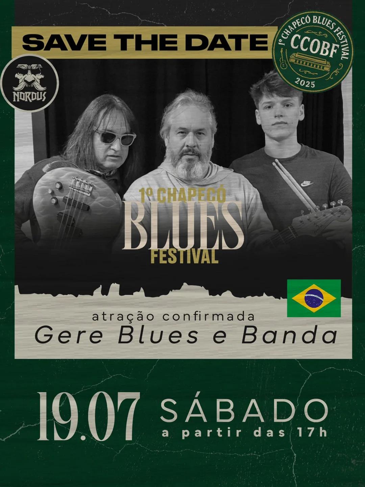

Trinta anos de estrada, sentimento, guitarra e voz.
Ouça agora o EP "House Blues Neném"
Bio
Gere Blues, nome artístico de Geremias A. Fuhr,
é um ícone da guitarra blues de Chapecó, com mais de 30 anos de trajetória, Geremias A. Fuhr ganhou destaque nos
anos 2000 como guitarrista da banda Encruzilhada. Atualmente, segue carreira solo à frente de seu próprio trio e é
presença constante nos palcos da região.
Além de músico, Gere é um importante incentivador da cena musical local. À frente do Estúdio do Gere, oferece
suporte técnico a músicos e casas noturnas, com serviços de gravação, ensaios e fornecimento de equipamentos. Seu
envolvimento em produções e eventos faz dele uma figura querida e respeitada entre artistas, donos de bares e
produtores da cidade.
Em 2023, lançou o single autoral “Balcão de Bar”, disponível em todas as plataformas digitais. A canção reflete
seu estilo próprio e seu gosto pela boemia, com riffs bem trabalhados e uma sonoridade que evidencia sua
maturidade musical.
Agenda

19/07/2025
Nordus Cervejaria, Chapecó-SC
Chapecó Blues Festival — Gere Blues & Banda + convidados internacionais.